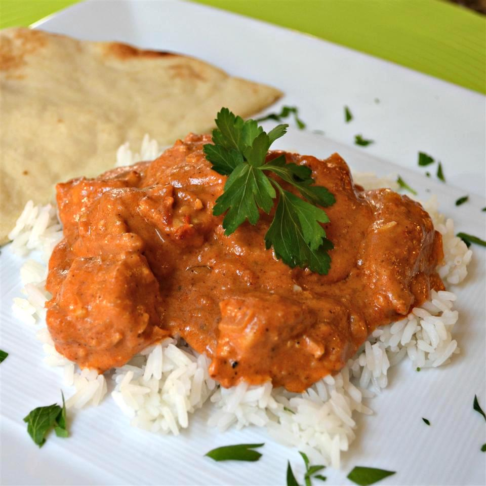

Mhhhh...Butter Chicken!

Description
Authentic Indian Butter Chicken.
Quick and easy recipe!
Ingredients
- 1 pound boneless, skinless chicken thighs, cut into bite-size pieces
- 1 tablespoon peanut oil
- 1 shallot, finely chopped
- ¼ white onion, chopped
- 2 tablespoons butter
- 2 teaspoons lemon juice
- 1 tablespoon ginger garlic paste
- 1 teaspoon garam masala
- 1 teaspoon chili powder
- 1 teaspoon ground cumin
- 1 bay leaf
- 1 cup tomato puree
- 1 cup half-and-half
- ¼ cup plain yogurt
- 1 pinch salt
- 1 pinch black pepper
- 1 tablespoon peanut oil
- ¼ teaspoon cayenne pepper, or to taste
- 1 tablespoon cornstarch
- ¼ cup water
-
Heat 1 tablespoon oil in a large saucepan over medium-high heat.
Saute shallot and onion until soft and translucent, about 5 minutes.
-
Stir in butter, lemon juice, ginger-garlic paste,
1 teaspoon garam masala, chili powder, cumin,
and bay leaf. Stir while cooking for 1 minute.
Add tomato sauce, and cook for 2 minutes, continuing
to stir frequently. Stir in half-and-half and yogurt.
Reduce heat to low, and simmer for 10 minutes,
stirring frequently. Season with salt and pepper.
Remove from heat and set aside.
-
Heat 1 tablespoon oil in a large heavy skillet
over medium heat. Cook chicken until lightly browned,
about 10 minutes.
-
Bake in preheated oven for 30 minutes, or until cheese
is melted and bubbly.
-
Reduce heat, and season with 1 teaspoon garam masala and
cayenne. Stir in a few spoonfuls of sauce, and simmer until
liquid has reduced, and chicken is no longer pink.
Add cooked chicken into sauce and stir together.
-
Dissolve cornstarch into water, then mix into the sauce.
Cook for 5 to 10 minutes, or until thickened.